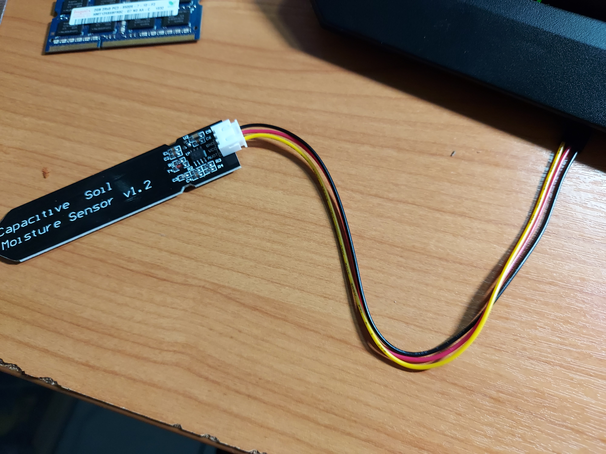
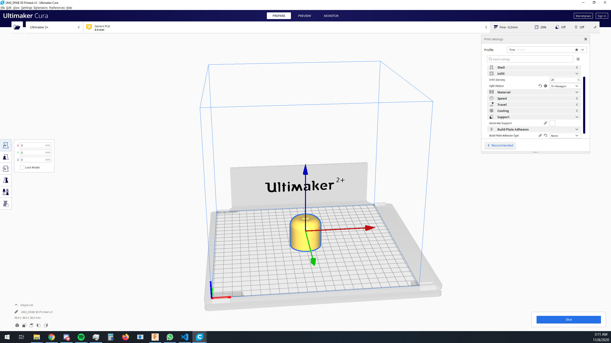
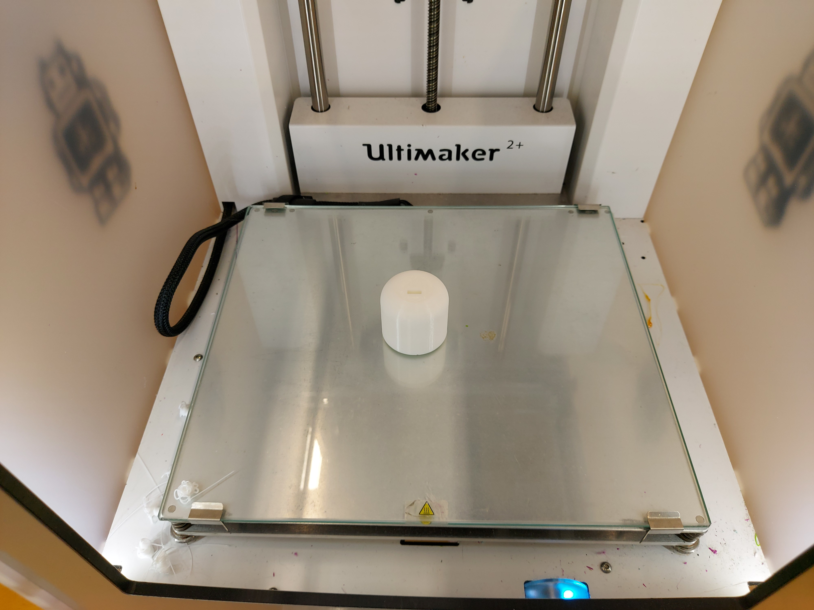
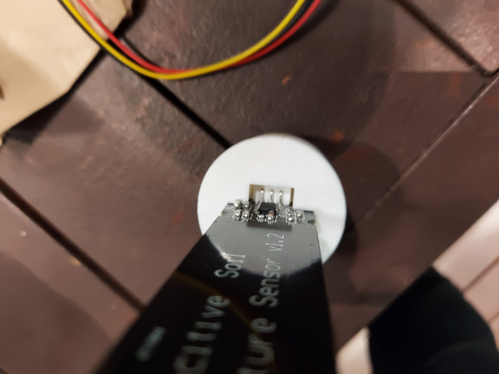
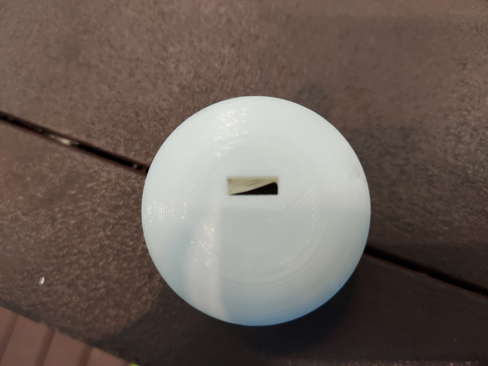

As part of the project requirements, we are required to 3D print a part for our project.
Whilst I initially planned for 3D printing the entire water tank for my watering plant system, due to economical reasons and time, it is not feasible to 3D print the entire water tank.
I instead decided to 3D print a cover for my water sensor that I will be placing in my pot with my plant.
As can be seen, there some electronic components on the sensor. From previous use of an identical sensor, soaking it entirely in water led to some smoke, damaging it and rendering it useless.
As a result, I would prefer for water to not be in contact with the electrical components. Hence the 3D printing of a cover for the top part of the sensor.
Before sketching and modelling, my cover, I measured the dimensions of my capacitative water sensor using a vernier caliper and ruler.
I hope to print a cover that is fits the capacitative water sensor as tightly as possible, minimising play, allowing little to water sensor to get into it.

I first start by sketching the base of cover. A rectangle in the middle to compensate for the body of the water sensor.

I then extruded it by 26mm, the height of 1 segment of the body.

I then sketched a notch to compensate for the housing of the cable for the capacitative water sensor.

I then extruded it further, the hole for the cable housing clearly visible.

I then decided to entirely cut through the bottom of the body to allow a clear path for the cable housing.

I then sketched a smaller rectangle for my cable to fit through.

I then expanded the body further.

I used the fillet tool on the top edge of the cover, providing a curved surface, this will hopefully allow water to slide off the cover,instead of accumulating on the top with a flat surface.

I then sketched a rectangle for the main body.

Followed by cutting/extruding for the main body to fit.
After this, I then exported it as a .stl file.
Opening it with cura, I proceeded to set the settings required such as quality and infill density.
Afterwards, I sliced it and the file was convert to gcode which the 3D printer uses.
Here is an image of the printed model:

After printing it, I found that the water sensor could not fit the 3D printed cover.
As can be seen, the water sensor is unable to be fit in due to me not factoring in the components on the top of the board.
Furthermore, I noticed that the 3D printer had a printing error as seen in the image below:
There are some strands from a misprint, I will have to file that down if it repeats in the reprinted model as it will block my sensor cable from fitting.
I proceeded to rectify the issue.

I sketched out some areas in which material can be removed to allow for more space for the water sensor.

I then proceeded to extrude it by 26mm, cutting it. This will allow the cover to slip over the components on the sensor.

Finally, a view of the end product in Fusion 360. Hopefully this will give the sensor more room and allow it to fit.
A comparison for the clearance before and after:


After a reprint, the capacitative water sensor is able to fit into the modified cover. I think with my modifications I might have increased the hollow height by too much, resulting in some play.
However the width is rather tight with some tape applied.
I think that looking in hindsight, printing a hollow cover would have easier to design and cheaper in terms of material. However, I think that doing so would slightly reduce the effectiveness of the cover due to possible play between the sensor and the walls of the cover.